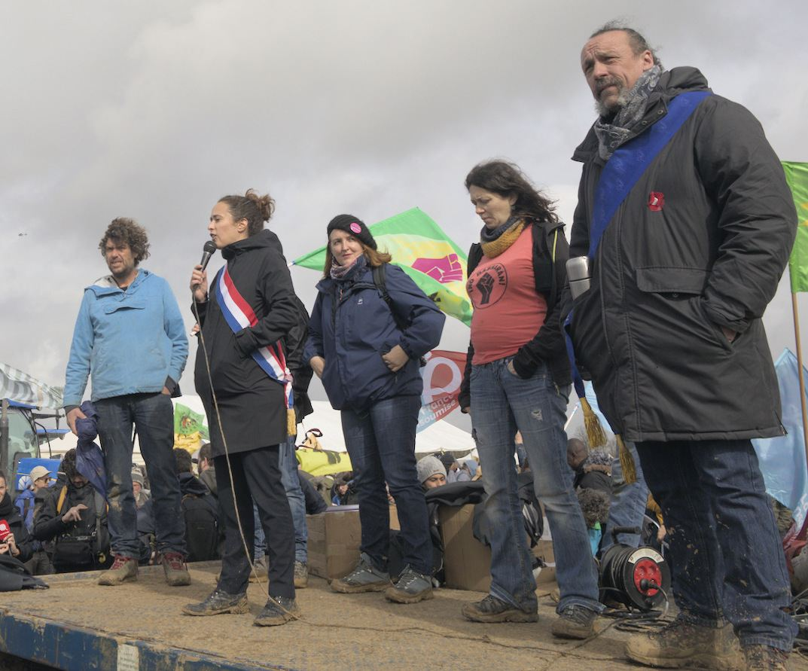

Les Soulèvements de la Terre ne sont pas une organisation avec un bureau et des cartes de membre. Ils se décrivent comme une coalition, ou une campagne d'actions. C'est d'ailleurs ce qui a rendu leur dissolution si absurde : comment dissoudre des gens qui se rassemblent ?
Qui est dedans
- Des collectifs locaux en lutte contre un projet précis : une bassine, une carrière, une autoroute, une usine.
- Des paysannes et paysans, notamment de la Confédération paysanne.
- Des syndicats : sections de Solidaires, de la CGT.
- Des militants venus des ZAD et de la mouvance autonome.
- Des naturalistes, des scientifiques, des associations écologistes, et des jeunes venus de Youth for Climate ou d'Extinction Rebellion, lassés des marches sans effet.
En juin 2023, la coalition revendique une centaine de collectifs, et plus de 110 000 personnes se déclarent publiquement membres.
Agir par saisons
Le mouvement s'organise en saisons : quelques mois pendant lesquels la coalition choisit plusieurs luttes locales et organise une grande mobilisation pour chacune. La lutte reste aux gens du coin ; les Soulèvements apportent du monde, de la logistique et de la visibilité. C'est un principe fédéraliste : le local décide, le réseau renforce.
Un week-end de mobilisation
À Sainte-Soline, la base arrière est installée à Melle, à une trentaine de kilomètres, sur le terrain d'un agriculteur : cantine, garderie pour les enfants, concerts, conférences, débats. Les cortèges partent ensuite à travers champs, chacun avec sa couleur et sa façon de faire. Ceux qui ne veulent pas d'affrontement restent loin des grilles ; d'autres vont au contact.

La « pluralité des tactiques »
Les Soulèvements assument de mêler les modes d'action :
- les manifestations de masse, même interdites ;
- la désobéissance civile : occuper, bloquer, planter là où on bétonne ;
- le « désarmement » : rendre inutilisable une installation jugée destructrice (couper une canalisation, démonter une pompe, envahir une centrale à béton).
L'idée : ne pas opposer les « gentils » et les « méchants » militants, mais s'organiser pour que chacun agisse à sa façon, sans se désolidariser des autres face à la répression.
Le convoi de l'eau
En août 2023, après Sainte-Soline et la dissolution, 700 cyclistes roulent 400 km de Sainte-Soline à Paris. En route, plusieurs centaines de personnes bloquent le siège de l'Agence de l'eau d'Orléans, qui finance les bassines.
À retenir
- Une coalition sans chef ni adhésion, où les luttes locales gardent la main.
- Des alliances rares : paysans, syndicalistes, autonomes et scientifiques ensemble.
- La logistique (cantines, camps, garderies) compte autant que les actions.
Sources et pour aller plus loin
Sur le web
- Les Soulèvements de la TerreOrganisation, protagonistes et modes d'action.
- Sainte-Soline, 25 mars 2023La base arrière de Melle et les cortèges.
Sur le site
- Monter un collectif qui tientLes bases pour s'organiser localement.
- L'outil cantine de MamieCalculer les quantités pour nourrir une mobilisation.
Dossier écrit à partir des articles Wikipédia cités, à relire par la bande. Sources vérifiées le 13 novembre 2026.
Dossier rédigé par la bande à Mamie à partir de travaux d'historiennes et d'historiens et de textes des mouvements concernés. Libre de reproduction.